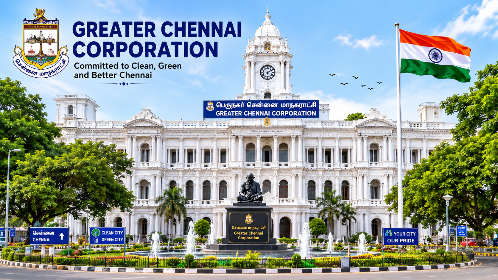

Understanding how the Greater Chennai Corporation manages and develops
Madhuravoyal under the Indian Constitution.

Greater Chennai Corporation
The Greater Chennai Corporation is one of the oldest municipal corporations in India. It is responsible for providing civic administration and public services to the people living in Chennai, including the locality of Madhuravoyal. The Corporation ensures that essential facilities such as roads, drinking water, drainage systems, street lighting, sanitation, parks, and waste management are maintained efficiently.
The Corporation works under the provisions of the Constitution of India and the Tamil Nadu Government. It prepares development plans, improves infrastructure, promotes public health, and supports environmental protection through various government schemes and welfare programmes.
Every department within the Corporation works together to improve the quality of life for citizens. Engineers, health officers, revenue officers, sanitation workers, and administrative staff coordinate their efforts to provide efficient public services.
Administrative Structure
Madhuravoyal is administered through a structured system of local governance. The Greater Chennai Corporation divides the city into different zones and wards to ensure effective administration. Each ward is represented by an elected Councillor who works closely with government officials to identify and solve local issues.
The administration focuses on providing better roads, clean drinking water, efficient waste collection, proper drainage systems, public health services, and safe public spaces. Regular inspections and citizen feedback help improve these services and ensure transparency in governance.
Administrative Information
Category
Information
Country
India
State
Tamil Nadu
District
Chennai
Area
Madhuravoyal
Local Body
Greater Chennai Corporation
Government Type
Urban Local Government
Important Public Officials
Mayor
The Mayor is the head of the Greater Chennai Corporation. The Mayor provides leadership, oversees civic development projects, and works with elected representatives and government officials to improve public services across Chennai.
Commissioner
The Commissioner is the chief administrative officer responsible for implementing government policies, supervising departments, managing public services, and ensuring that development projects are carried out efficiently.
Councillor
The Councillor represents the local ward and works directly with the public to address issues such as sanitation, roads, street lighting, parks, and public welfare. Citizens can approach their Councillor to report civic problems and suggest improvements.
Functions of the Local Government
The Greater Chennai Corporation performs many important functions to ensure the smooth development and maintenance of Madhuravoyal. It plans and executes development projects, maintains public infrastructure, improves sanitation, and provides various civic amenities to the residents. The local government works continuously to create a clean, safe, and healthy environment for everyone.
Various departments within the Corporation coordinate with each other to improve transportation, healthcare, education, environmental protection, and public welfare. Citizens are encouraged to participate in local governance by providing suggestions, reporting civic issues, and supporting community development activities.
Major Responsibilities
Road Construction and Maintenance
Street Light Installation and Maintenance
Drinking Water Supply
Storm Water Drainage
Garbage Collection and Waste Management
Public Health Services
Maintenance of Parks and Playgrounds
Birth and Death Registration
Property Tax Collection
Environmental Protection
Government Departments
Department
Main Responsibility
Health Department
Hospitals, Vaccination, Public Health
Engineering Department
Roads, Bridges and Drainage
Revenue Department
Property Tax Collection
Sanitation Department
Waste Collection and Cleanliness
Water Supply Department
Distribution of Drinking Water
Parks Department
Maintenance of Parks and Gardens
Citizen Services
Residents of Madhuravoyal can access various government services through the Greater Chennai Corporation. These services include applying for birth certificates, death certificates, paying property tax, obtaining trade licenses, reporting damaged roads, requesting new street lights, and submitting public grievances. Online government portals have made these services easier and faster for citizens.
Citizens are encouraged to make use of digital services for greater transparency and convenience. Regular public awareness campaigns are also conducted to educate people about government schemes and welfare programmes.
Benefits of Local Government
Provides essential public services.
Improves roads and transportation.
Maintains public health and sanitation.
Supports environmental protection.
Promotes community development.
Provides better civic facilities.
Ensures transparency in administration.
Encourages citizen participation.
Why is Local Government Important?
Local Government acts as the bridge between citizens and the State Government. It understands local needs more effectively and provides quick solutions to civic problems. Efficient administration improves the quality of life by ensuring better public facilities, cleaner surroundings, and faster implementation of welfare schemes.
Help
This page explains the structure and functions of the Greater Chennai Corporation and the local administration of Madhuravoyal. Students can use this information to understand how urban local bodies function under the Indian Constitution and how civic services are managed efficiently.